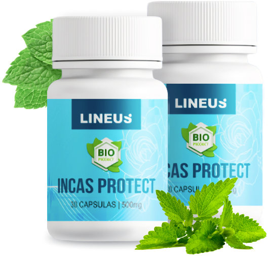
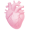

¡Compruébalo tú mismo!
¿Padeces al menos uno
de los siguientes síntomas?
Dedos
adormecidos
y fríos
Picos de presión
arterial
Edema
facial
Fatiga
crónica
Taquicardia
Visión borrosa
Dolores
de cabeza
Hiperhidrosis
Apatía, irritación,
somnolencia
Puntos negros
ante los ojos
(miodesopsias)
Dedos adormecidos
y fríos
Picos de presión
arterial
Taquicardia
Visión borrosa
Fatiga crónica
Edema facial
Dolores
de cabeza
Hiperhidrosis
Apatía, irritación,
somnolencia
Puntos negros
ante los ojos
(miodesopsias)
¡ESTO ES HIPERTENSIÓN!
siquiera sospechan que están gravemente enfermos
¿Por qué es peligrosa
la hipertensión?
Las consecuencias de la hipertensión arterial son más peligrosas que las enfermedades oncológicas y la tuberculosis en conjunto.
El 89% de los casos de hipertensión terminan en infartos.
La trombosis se desarrolla en los vasos sanguíneos. Los riesgos de hemorragias cerebrales y el desarrollo de apoplejías son altos.
Fumar, beber alcohol, la malnutrición, el sedentarismo, el estrés y los altos niveles de colesterol hacen que las consecuencias sean especialmente peligrosas.
Las personas con exceso de peso sufren de hipertensión 3-4 veces más a menudo que las personas normales.
¡IMPORTANTE!
La hipertensión progresa rápidamente, uno de cada cinco
pacientes se enfrenta a un riesgo de desenlace letal.
Comienza el tratamiento ahora y recupera tu salud.
El descubrimiento
de los científicos
que marcó una época

El descubrimiento
de los científicos
que marcó una época
A los científicos británicos del Centro Nacional de Flebología les llevó 8 años desarrollar este suplemento terapéutico profiláctico.
El descubrimiento del año fue nominado para el Premio Internacional de la Fundación Gairdner.
Las pruebas en múltiples etapas demostraron la efectividad del suplemento, lo que proporcionó a los investigadores todas las licencias, certificados de calidad y apoyo gubernamental necesarios.
Incas Protect elimina las 5 causas
principales de la hipertensión
Incas Protect
elimina las 5
causas principales
de la hipertensión
Sobrecargas nerviosas (estrés, insomnio, etc.)
Incas Protect calma y reduce la ansiedad gracias a la premezcla de vitaminas y minerales presente en su composición
Toxinas en los vasos sanguíneos
El ajo en polvo desodorizado presente en la composición de Incas Protect mejora la función cardíaca y limpia los vasos sanguíneos de toxinas y placas de colesterol
Varices y trombosis
El apio en polvo mejora la circulación sanguínea, disuelve los coágulos y fortalece las paredes de los vasos sanguíneos
Azúcar en sangre elevado
Incas Protect reduce los niveles de azúcar en sangre gracias a la celulosa de uva
Exceso de peso
El extracto de té verde y la espirulina en polvo normalizan el peso, estimulan el metabolismo y mejoran la función renal
Sobrecargas nerviosas (estrés, insomnio, etc.)
Incas Protect calma y reduce la ansiedad gracias a la premezcla de vitaminas y minerales presente en su composición
Toxinas en los vasos sanguíneos
El ajo en polvo desodorizado presente en la composición de Incas Protect mejora la función cardíaca y limpia los vasos sanguíneos de toxinas y placas de colesterol
Varices y trombosis
El apio en polvo mejora la circulación sanguínea, disuelve los coágulos y fortalece las paredes de los vasos sanguíneos
Azúcar en sangre elevado
Incas Protect reduce los niveles de azúcar en sangre gracias a la celulosa de uva
Exceso de peso
El extracto de té verde y la espirulina en polvo normalizan el peso, estimulan el metabolismo y mejoran la función renal
Opinión de experto
Antonio López
Médico de categoría superior,
Ph.D. en Medicina
Opinión de experto
¡Demostrado!
Los bioflavonoides de ajo y las antocianinas de maíz morado son las sustancias más potentes para combatir la hipertensión. Se obtienen únicamente de los polvos desodorizados de estas plantas. Casi todos los productos para la hipertensión contienen extractos de estas plantas, pero en bajas concentraciones. Por lo tanto, no se debe esperar nada bueno de ellos, y mucho menos al instante.
Solo Incas Protect contiene extractos de ajo y maíz morado en la concentración necesaria para que el producto funcione eficazmente.
Solo Incas Protect contiene apio y ajo en polvo como base de su composición.
Yo participé personalmente en el desarrollo de su fórmula, por lo que recomiendo estas cápsulas a cualquier persona que tenga la presión arterial alta.
También recomiendo este suplemento a mis pacientes y a menudo les regaño por automedicarse con productos dudosos "por consejo de un amigo" y "de Internet". ¡Esto no se debe hacer! Hay que luchar contra la hipertensión solamente con métodos seguros en los que confíen médicos y científicos
La efectividad de Incas Protect ©
fue confirmada mediante ensayos clínicos
La aprobación clínica se llevó a cabo en un hospital de Brighton en 2011.
Dos grupos de voluntarios participaron en el ensayo clínico que duró 25 días.
El 1er grupo, formado por hombres y mujeres de 28 a 80 años, con trastornos hipertensivos, que tomaron Incas Protect El 2do grupo, formado por hombres y mujeres con condiciones similares, que tomaron un placebo.
Resultados de la investigación
Placebo
Normalización
de la presión arterial
Eliminación
de la trombosis venosa
Eliminación
de la arritmia
Normalización de la presión arterial
Eliminación de la trombosis venosa
Eliminación de la arritmia
Comentarios de personas
que apreciaron el efecto de Incas Protect ©

Olivia, 39 años, Cusco
Comprendí que la reducción de la PA provoca un accidente cerebrovascular isquémico - infarto cerebral - al ver que le sucede a mi hermana mayor. Los médicos le salvaron la vida, pero no se recuperó completamente. La primera vez que también enfrenté esta enfermedad, ya conocía algunos trucos y sabía que debía buscar remedios vegetales y herbales. Mi médico, una mujer muy sabia, me recetó Incas Protect. Le estoy muy agradecida. Ya pasaron 4 años y ya no soy hipertensa. Soy una persona completamente sana, que no tiene miedo de un infarto ni de una apoplejía. ¡Cuida tu salud!
Lorena, 44, Lima
Hace algunos años, recibí un tratamiento en el sanatorio de Florida. Allí se investigaba un nuevo remedio para la hipertensión. Sin duda, tenía miedo. Pero, ¿qué otra cosa podía hacer? Ningún otro remedio me ayudaba, así que decidí intentarlo. Por suerte, estaba en un grupo que tomaba Incas Protect, y no el placebo. Dos horas después, mi presión se normalizó. Poco a poco, empecé a sentirme mucho mejor! Estoy muy contento de haber participado en el ensayo del producto en ese entonces. Ahora, mi PA siempre está en norma.
Marco P. 51 años, Huaral
Tengo 51 años. Hace 3 años me diagnosticaron hipertensión en nuestra clínica. Un soplo cardíaco y así sucesivamente. Padecí pero no hice nada al respecto. Hace 6 meses, a juzgar por todos los signos, tuve un micro infarto. Entonces, naturalmente, me asusté, pero me negué a tomar las pastillas que me recetaron de inmediato. La química es dañina, eso todo el mundo lo sabe. Pero no tenía ni idea de qué hacer. Afortunadamente, me encontré con un viejo amigo que me recomendó Incas Protect. Ahora, como pueden adivinar, NADA me preocupa. Mi presión es normal, ¡estoy sano como un caballo!
Beneficios de Incas Protect ©
Ayuda rápida
En las primeras 6 horas siguientes a la ingesta, tu presión se normalizará.
Mejoramiento integral de la salud
Eliminación de la angina de pecho, la arritmia, la neurosis, mejora la memoria, recupera el habla y los movimientos después de los accidentes cerebrovasculares.
No causa picos o caídas de presión repentinas.
Regula con exactitud la función cardíaca.
Resultado efectivo sin efectos secundarios.
Las células vivas de las plantas coinciden completamente con las células del cuerpo humano
Método de uso:
Toma 2 cápsulas después de comer. Para un máximo rendimiento toma el producto durante 3 meses. Las instrucciones detalladas están incluidas en el envase.